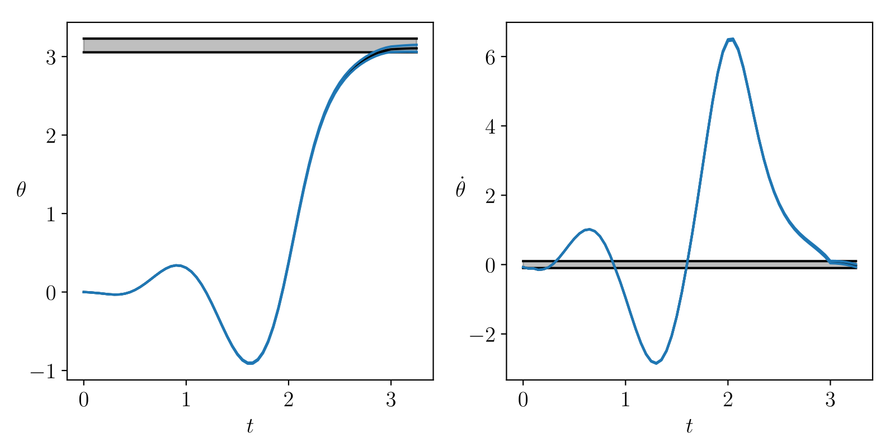
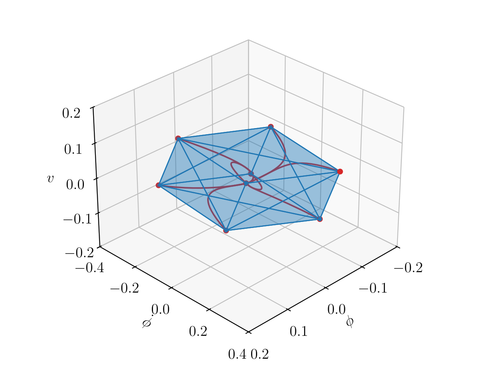
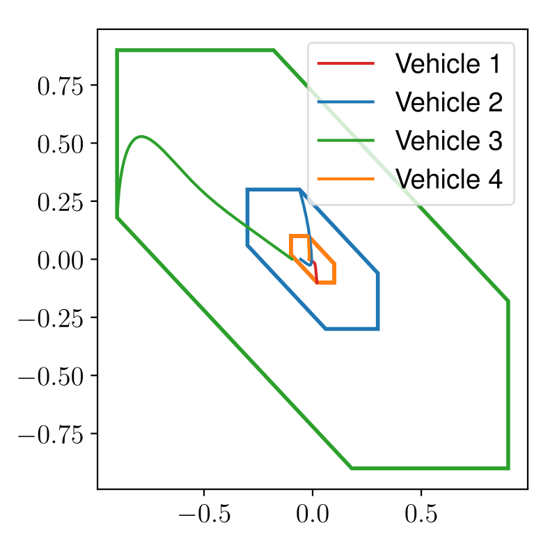

immrax: A Parallelizable and Differentiable Toolbox for Interval Analysis and Mixed Monotone Reachability in JAX
ADHS 2024
\(^\dagger\)School of Electrical and Computer Engineering, Georgia Institute of Technology
\(^*\)Department of Electrical, Computer, and Energy Engineering, University of Colorado, Boulder
July 2, 2024
Acknowledgements
Saber Jafarpour
saberjafarpour.github.io
Advisor: Samuel Coogan
coogan.ece.gatech.edu
Motivation
Motivation: Safety of Neural Network Controlled Feedback Systems
- Efficiently and scalably certify neural network controlled systems
- Simple enough to train neural network controllers with safety guarantees
Reachability
Given a set of possible initial states \(\mathcal{X}\) and possible disturbances \(\mathcal{W}\), show that the set of all possible states \(\mathcal{R}(t,\mathcal{X},\mathcal{W})\) does not hit unsafe states \(\mathcal{A}\) while reaching goal states \(\mathcal{G}\).
Invariance
Show that a set of possible states \(\mathcal{X}\) is \(\mathcal{W}\)-robustly forward invariant, i.e., trajectories starting in \(\mathcal{X}\) remain in \(\mathcal{X}\) for all future time.
Interval Analysis for Neural Network Controlled System Robustness
Our Approach:
- Interval analysis for general nonlinear systems analysis + neural network verification tools [1]
- Scalable in state dimension compared to existing tools
Why we built immrax
No existing interval analysis tool supported either:
- GPU processing/parallelization, for rapid, batched verification online or in-the-loop
- Automatic differentiability, for implementation in the training loop
A interval analysis toolbox supporting these features could potentially be useful in other applications beyond learning-enabled systems.
Background: Interval Analysis
Inclusion Functions
Definition (Inclusion Function)
Given a map \(f:\mathbb{R}^n\to\mathbb{R}^m\), the map \(\mathsf{F}=[\underline{\mathsf{F}},\overline{\mathsf{F}}]\) is an inclusion function [2] for \(f\) if \[\begin{align*} \underline{\mathsf{F}}(\underline{x},\overline{x}) \leq f(x) \leq \overline{\mathsf{F}}(\underline{x},\overline{x}), \end{align*}\] for every \(x\in[\underline{x},\overline{x}]\).
Definition (Interval)
An interval \([\underline{x},\overline{x}]\subset\mathbb{R}^n\) is defined as the closed and bounded set \[ \begin{align*} \{x\in\mathbb{R}^n : \underline{x}\leq x\leq \overline{x}\}, \end{align*} \] where \(\leq\) is element-wise.

Minimal Inclusion Function
Definition (Minimal Inclusion Function)
Given \(f:\mathbb{R}^n\to\mathbb{R}^m\), \(\mathsf{F}\) defined by \[ \underline{\mathsf{F}}_i(\underline{x},\overline{x}) = \inf_{x\in[\underline{x},\overline{x}]} f_i(x), \ \overline{\mathsf{F}}_i(\underline{x},\overline{x}) = \sup_{x\in[\underline{x},\overline{x}]} f_i(x), \] is called the minimal inclusion function of \(f\).
Example (Arithmetic)
\[ \begin{align*} &[\underline{a},\overline{a}] + [\underline{b},\overline{b}] = [\underline{a}+ \underline{b}, \overline{a}+ \overline{b}] \\ &[\underline{a},\overline{a}]\cdot[\underline{b},\overline{b}] := [\min \{\underline{a}\underline{b},\underline{a}\overline{b},\overline{a}\underline{b},\overline{a}\overline{b}\}, \\ & \quad \max\{\underline{a}\underline{b},\underline{a}\overline{b},\overline{a}\underline{b},\overline{a}\overline{b}\} \end{align*} \]
- Can define for primitive functions like \(\sin\), \(\exp\), \(x^n\), \(1/x\)
- Generally computationally intractible
Example (Monotone)
Let \(f\) be monotone wrt \(\leq\). \[ \begin{align*} \underline{\mathsf{F}}_i(\underline{x},\overline{x}) &= \min\{f_i(\underline{x}),f_i(\overline{x})\}, \\ \overline{\mathsf{F}}_i(\underline{x},\overline{x}) &= \max\{f_i(\underline{x}),f_i(\overline{x})\}. \end{align*} \]
Example (Continuous)
\(\mathcal{S}= \{\text{critical points}\}\cap[\underline{x},\overline{x}]\) \[ \begin{align*} \underline{\mathsf{F}}_i(\underline{x},\overline{x}) &= \min_{x\in \mathcal{S}\cup \{\underline{x},\overline{x}\}} f_i(x), \\ \overline{\mathsf{F}}_i(\underline{x},\overline{x}) &= \max_{x\in \mathcal{S}\cup \{\underline{x},\overline{x}\}} f_i(x). \end{align*} \]
Building Inclusion Functions: Natural Inclusion Function
Definition (Natural Inclusion Function)
Let \(f = f_1 \circ \cdots \circ f_\ell\) be the composition of functions/operators \(f_i\), with inclusion functions \(\mathsf{F}_i\). Then \[\begin{align*} \mathsf{F}(\underline{x},\overline{x}) = (\mathsf{F}_1\circ \mathsf{F}_2\circ\cdots\circ \mathsf{F}_\ell)(\underline{x},\overline{x}), \end{align*}\] is a natural inclusion function of \(f\).
Example
Let \(f(x) = \sin(x^2)\). Let \(\textsf{SIN}\), \(\textsf{POW}_2\) be the minimal inclusion functions of \(\sin(x)\) and \(x^2\). \[\begin{align*} \mathsf{F}(\underline{x},\overline{x}) = \textsf{SIN}(\textsf{POW}_2(\underline{x},\overline{x})) \end{align*}\] is an inclusion function for \(f\).
- Simple strategy to build inclusion functions for general mappings through composition
immrax.inclusion: Interval Analysis in JAX
Basics of JAX [3]: A Numerical Computation Library for Python
jit(f): Just-in-time Compilation
Compiles f upon its first execution
vmap(f): Vectorizing/Parallelizing
Vectorizes f along specified axis of input array
{jvp,vjp,jacfwd,grad}(f): Automatic Differentiation
Forward- or Reverse-mode autodiff using JVP/VJP
- Key Feature: These transformations are arbitrarily composable.
Basics of JAX [3]: A Numerical Computation Library for Python
- Key Feature: These transformations are arbitrarily composable.
Internals of JAX [3]
- Traces functions into JAX programs dependent on input shapes and primitives
- Functionality is added by an interpreter, which binds each primitive into their desired behavior
immrax.inclusion Module: A JAX Interpreter for Interval Analysis
Interval Class
lower and upper attribute for lower and upper bound of interval.
natif(f): Natural Inclusion Function
Traces f into a JAX program, and interprets primitives using their minimal inclusion functions.
Example \(f(x) = \sin(x^2)\)
{ lambda ; a:f32[5]. let
b:f32[5] = integer_pow[y=2] a
c:f32[5] = sin b
in (c,) }{ lambda ; a:f32[5] . let
b:f32[5] = integer_pow[y=2] a
c:f32[5] = sin b
in (c,) }{ lambda ; a:f32[5]. let
b:f32[5] = integer_pow[y=2] a
c:f32[5] = sin b
in (c,) }immrax.inclusion Module: A JAX Interpreter for Interval Analysis
immraxis fully compatible with the JAX ecosystem,Intervalis registered as a Pytree nodenatifis fully composable with all other JAX transformations
Example: Jacobian-based Inclusion Function
Definition (Jacobian-Based Inclusion Function)
Let \(f:\mathbb{R}^n\to\mathbb{R}^m\) be differentiable, with inclusion function \(\mathsf{J}\) for its Jacobian as \(\frac{\partial f}{\partial x}(x) \in \mathsf{J}(\underline{x},\overline{x})\) for every \(x\in[\underline{x},\overline{x}]\). Let \({\mathring{x}}\in[\underline{x},\overline{x}]\).
\[ \begin{align*} \mathsf{F}(\underline{x},\overline{x}) = [\mathsf{J}(\underline{x},\overline{x})]([\underline{x},\overline{x}] - {\mathring{x}}) + f({\mathring{x}}) \end{align*} \]
is a Jacobian-based inclusion function of \(f\).
immrax.embedding: Bounding Nonlinear Systems
immrax.embedding Module: Bounding Nonlinear Systems
Definition (Embedding System)
Given a nonlinear system \(\dot{x} = f(x,w)\), an inclusion function \(\mathsf{F}(\underline{x},\overline{x},\underline{w},\overline{w})\) induces the embedding system \[ \begin{aligned} \dot{\underline{x}}_i = \big(\underline{\mathsf{E}}(\underline{x},\overline{x},\underline{w},\overline{w})\big)_i := \big(\underline{\mathsf{F}}(\underline{x},\overline{x}_{i:\underline{x}},\underline{w},\overline{w})\big)_i,\\ \dot{\overline{x}}_i = \big(\overline{\mathsf{E}}(\underline{x},\overline{x},\underline{w},\overline{w})\big)_i := \big(\overline{\mathsf{F}}(\underline{x}_{i:\overline{x}},\overline{x},\underline{w},\overline{w})\big)_i. \end{aligned} \]
- \(2n\)-dimensional monotone dynamical system that “contains” the original system
- Evaluates inclusion function separately on each face of the interval \([\underline{x},\overline{x}]\)
- \(x(t)\in [\underline{x}(t), \overline{x}(t)]\), for \(x_0\in[\underline{x}_0,\overline{x}_0]\)
immrax.ifembtransforms aSysteminto anEmbeddingSystem
Embedding System Trajectory
\[ x_0\in[\underline{x}_0,\overline{x}_0] \implies x(t) \in [\underline{x}(t),\overline{x}(t)] \]
Example: Robust Optimal Control of a Pendulum
Consider a forced, damped pendulum
\[ ml^2\ddot{\theta} + b\dot{\theta} + mgl\sin(\theta) = \tau, \]
The torque \(\tau := (1 + w)u\):
- \(u\in\mathbb{R}\) is the desired torque input
- \(w\in[\underline{w},\overline{w}] := [-0.01,0.01]\) is a bounded multiplicative disturbance
\[ \dot{x} = f(x,u,w) = \left[\begin{matrix} x_2 \\ \frac{(1 + w)u - bx_2}{ml^2} - \frac{g}{l}\sin x_1 \end{matrix}\right] \]
The goal is to stabilize the pendulum from the bottom to a specified region at the top.
class Pendulum (immrax.System) :
def __init__(self, m=0.15, l=0.5, b=0.1) :
self.evolution = 'continuous'; self.xlen = 2
self.m = m; self.l = l; self.b = b
def f(self, t, x, u, w) :
return jnp.array([
x[1],
(((1 + w[0])*u[0] - self.b*x[1]) /
((self.m) * self.l**2)) - (g/self.l)*jnp.sin(x[0])
])
sys = Pendulum()Example: Inclusion Function for the Pendulum
With a closed loop policy \(\pi(t,x) = K(x(t) - x_\mathrm{nom}(t)) + u_\mathrm{ff}(t)\), the following is an inclusion function for \(f(x,\pi(t,x),w)\),
\[ \begin{align*} [\textsf{F}^\pi(t,\underline{x},\overline{x},\underline{w},\overline{w})] := &\, ([\textsf{J}_x] + [\textsf{J}_u]K)([\underline{x},\overline{x}] - x_\mathrm{nom}(t)) \\ % &+ [\textsf{M}_u^\mathcal{O}]([\ulu,\olu] - \mathring{u}) & + [\textsf{J}_w]([\underline{w},\overline{w}] - w_\mathrm{nom}(t)) \\ & + f(x_\mathrm{nom}(t),u_{\mathrm{ff}}(t),w_\mathrm{nom}(t)), \end{align*} \]
where \(\mathsf{J}\) is from the Jacobian-based inclusion function.
Once we have the inclusion function \(\mathsf{F}\), the immrax.ifemb transform automatically builds the induced embedding system.
Example: Optimization Problem to Control the Pendulum
We build the following problem, \[ \begin{aligned} \min_{u_\mathrm{ff}, K} &\sum_{i=1}^N |u_{\mathrm{ff}}(t_i)|^2 + \|K\|_F^2 + \sum_{i=1}^N \|\overline{x}(t_i) - \underline{x}(t_i)\|_2^2 \\ \text{s.t.}& \ \ \underline{x}_f \leq \underline{x}(t_j),\ \ \overline{x}(t_j) \leq \overline{x}_f, \ \ j=N_e,\dots,N, \ \\ & \underline{x}(0) = \overline{x}(0) = (0, 0), \\ & \left[\begin{matrix} \underline{x}(t_{i+1}) \\ \overline{x}(t_{i+1}) \end{matrix}\right] = \left[\begin{matrix} \underline{x}(t_{i}) \\ \overline{x}(t_{i}) \end{matrix}\right] + \Delta t \textsf{E}(t_i,\underline{x}(t_i),\overline{x}(t_i),\underline{w},\overline{w}). \end{aligned} \]
- Embedding system is discretized with step \(\Delta t\).
- Starts at \(\underline{x}(0) = \overline{x}(0) = 0\)
- Must end in target set \([\underline{x}_f,\overline{x}_f]\), stay for \(t\in[N_e\Delta t, N\Delta t]\)
# Objective function
def obj (u) :
x = rollout_cl_embsys(u)
return jnp.sum(u**2) + jnp.sum((x[:,2:] - x[:,:2])**2)
# Inequality constraints
def con_ineq (u) :
x = rollout_cl_embsys(u)
return jnp.concatenate(((x[Ne:,:2] - xfl).reshape(-1),
(xfu - x[Ne:,2:]).reshape(-1)))rollout_cl_embsystakesucontaining \(K\) and \(u_\mathrm{ff}\) (at sampled steps), returns Euler integration onembsysusingjax.lax.scan
Example: Setting up IPOPT Using Automatic Differentiation
# Objective Gradient
obj_grad = jax.grad(obj)
# Objective Hessian
obj_hess = jax.jacfwd(jax.jacrev(obj))
# Constraint Jacobian
con_ineq_jac = jax.jacfwd(con_ineq)
# Constraint Hessian
con_ineq_hess = jax.jacfwd(jax.jacrev(con_ineq))
# Constraint Hessian-Vector Product
def con_ineq_hessvp (u, v) :
def hessvp (u) :
_, hvp = jax.vjp(con_ineq, u)
return hvp(v)[0]
return jax.jacrev(hessvp)(u) - These can all be JIT compiled for rapid execution
- True values, not numerical estimations
Example: Solving the Problem Using IPOPT
cons = [ {'type': 'ineq', 'fun': con_ineq,
'jac': con_ineq_jac, 'hess': con_ineq_hessvp}, ]
res = minimize_ipopt(obj, jac=obj_grad, hess=obj_hess, x0=u0,
constraints=cons, options=ipopt_opts)\(5.262\) seconds, \(100\) iterations

Further Applications of immrax
Revisiting the Neural Network Verification Problem
\[ % \begin{xalignat*}{2} \label{eq:vehicle} % \dot{p}_x &= v \cos(\phi + \beta(u_2)), & \dot{\phi} &=v\sin(\beta(u_2)),\\ % \dot{p}_y &= v \sin(\phi + \beta(u_2)), & \dot{v} &= u_1. % \end{xalignat*} \begin{align*} \dot{p}_x &= v \cos(\phi + \beta(u_2)), \\ \dot{p}_y &= v \sin(\phi + \beta(u_2)), \\ \dot{\phi} &=v\sin(\beta(u_2)), \\ \dot{v} &= u_1, \\ \beta(u_1) &= \arctan \left(\frac{1}{2}\tan(u_2)\right). \end{align*} \]
- Controlled by \(4\times 100\times 100\times 2\) ReLU network mimicking stabilizing MPC
- Inclusion function from [1], ReachMM
| # Part. | ReachMM | immrax CPU |
immrax GPU |
|---|---|---|---|
| \(1^4 = 1\) | \(.0476\) | \(.0112\) | \(.0178\) |
| \(2^4 = 16\) | \(.690\) | \(.143\) | \(.0207\) |
| \(3^4 = 81\) | \(3.44\) | \(.627\) | \(.0306\) |
| \(4^4 = 256\) | \(11.0\) | \(1.44\) | \(.0489\) |
| \(5^4 = 625\) | \(27.1\) | \(4.60\) | \(.095\) |
| \(6^4 = 1296\) | \(55.8\) | \(11.1\) | \(.198\) |

Training Certifiably Robust Neural Network Controllers (in progress)
If \(\underline{\mathsf{E}}(\underline{x},\overline{x},\underline{w},\overline{w}) \geq 0\) and \(\overline{\mathsf{E}}(\underline{x},\overline{x},\underline{w},\overline{w}) \leq 0\), then \([\underline{x},\overline{x}]\) is \([\underline{w},\overline{w}]\)-robustly forward invariant.
\[ \mathcal{L}(\pi,\eta) = \operatorname{ReLU}(\overline{\mathsf{E}}(\underline{x},\overline{x},\underline{w},\overline{w}) + \varepsilon) + \operatorname{ReLU}(-\underline{\mathsf{E}}(\underline{x},\overline{x},\underline{w},\overline{w}) + \varepsilon) \]
 Nonlinear segway model
 Platoon up to 56 states
Conclusions
- Interval analysis is an automated, scalable tool to analyze robustness of general functions.
immraxprovides a JAX interpreternatiffor the natural inclusion function, and anIntervalclass compatible with the rest of JAX.- Simple composable API as a function transformation.
- Automatic differentiation can solve robust optimal control problems and train certified robust neural network controllers.
- JIT compilation/GPU parallelization improves efficiency/scalability compared to previous work.
Github: github.com/gtfactslab/immrax
Documentation: immrax.readthedocs.io
References
immrax: Interval Analysis in JAX